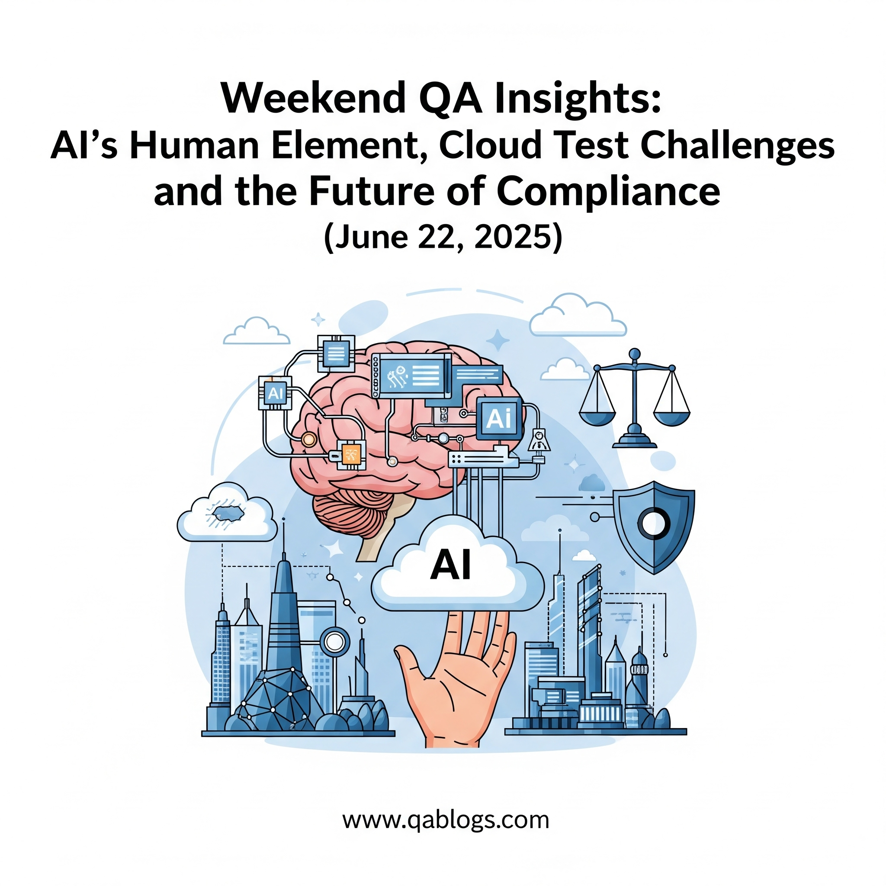

Weekend QA Insights: AI's Human Element, Cloud Test Challenges, and the Future of Compliance (June 22, 2025)

Key Takeaways
- AI streamlines automation, but human expertise is vital for exploratory testing, user experience validation, and ethical oversight.
- Cloud-native testing requires robust strategies for environment consistency, secure data management, and performance validation using tools like Docker and NeoLoad.
- The European Accessibility Act (EAA) and other regulations demand rigorous compliance testing, making tools like axe-core and TestRail essential for QA teams.
- QA professionals must balance AI automation with human-led testing and upskill in cloud-native tools and compliance standards to stay relevant.
As the software testing landscape evolves, quality assurance (QA) professionals are navigating a complex interplay of artificial intelligence (AI), cloud-native architectures, and stringent compliance requirements. On June 22, 2025, the QA community is buzzing with discussions about AI’s human-centric role in testing, the challenges of cloud-based testing environments, and the future of compliance in a regulated world. With the European Accessibility Act (EAA) deadline looming and cloud adoption soaring, QA engineers, testers, developers, and tech professionals must stay ahead of these trends to deliver high-quality, compliant software. This Weekend QA Insights post explores these critical topics, offering actionable strategies to enhance QA efficiency and ensure robust testing outcomes.
AI’s Human Element: Balancing Automation and Empathy
The Role of AI in QA
AI is revolutionizing software testing by automating repetitive tasks, predicting defects, and optimizing test coverage. Tools like mabl and Testim leverage agentic AI to generate test scripts, reduce flakiness, and analyze failures autonomously. However, the human element remains vital in QA, particularly for exploratory testing, user experience validation, and ethical oversight. A 2025 study reveals that 68% of QA teams combine AI automation with human expertise to achieve 30% higher defect detection rates than fully automated workflows.
Analogy: AI in QA is like a co-pilot—streamlining navigation but relying on human judgment for critical decisions, such as validating user emotions or cultural nuances in UI design.
Key AI Tools with a Human Touch
- mabl’s Auto TFA: Analyzes test failures and suggests fixes, but QA engineers validate recommendations to ensure context-specific solutions.
- Testim’s Visual Editor: Allows testers to refine AI-generated scripts manually, ensuring tests align with user expectations.
- KaneAI by LambdaTest: Uses natural language processing to create tests from user stories, but human oversight ensures alignment with business goals.
Real-World Example: A travel app used mabl’s AI to automate 80% of its regression tests but relied on QA engineers to validate accessibility features for visually impaired users, achieving EAA compliance ahead of the June 28, 2025, deadline.
Challenges and Solutions
- Challenge: Over-reliance on AI risks missing nuanced
defects.
Solution: Pair AI tools with exploratory testing sessions to capture user-centric issues, such as confusing navigation flows. - Challenge: Ethical concerns in AI-driven testing, especially in
sensitive domains like healthcare.
Solution: Implement human-in-the-loop validation to ensure AI decisions comply with regulations like the EU AI Act.
Practical Takeaway: Use AI tools like mabl for automation but allocate time for human-led exploratory testing to validate usability and ethical considerations.
Cloud Test Challenges: Navigating Complexity in 2025
The Rise of Cloud-Native Testing
Cloud-native architectures, built on microservices, containers, and Kubernetes, enable rapid scaling and deployment. However, testing these distributed systems presents unique challenges, from managing test environments to ensuring data security. A 2025 report indicates that 75% of enterprises use cloud-native testing to support DevOps, but 40% struggle with environment consistency and test data management.
Key Challenges in Cloud Testing
- Environment Consistency: Discrepancies between development, staging, and production environments lead to 25% of cloud-related defects.
- Test Data Management: GDPR and CCPA compliance requires secure handling of test data, especially in multi-tenant cloud setups.
- Performance Testing Complexity: Microservices and serverless architectures demand rigorous load testing to validate auto-scaling.
Tools and Strategies:
- Docker and Kubernetes: Create reproducible test environments to mimic production, reducing environment-specific bugs.
- NeoLoad for Performance Testing: Simulates real-world workloads to validate cloud app scalability, as used by Tokyo Gas to optimize Kubernetes clusters.
- Synthetic Data Tools: Generate compliant test data with tools like Tonic.ai to meet regulatory requirements without compromising security.
Real-World Example: A fintech company used Docker to replicate production environments, catching a latency issue in a microservice that could have disrupted transactions, saving $500,000 in potential downtime.
Comparing Cloud-Native vs. Traditional Testing
| Aspect | Cloud-Native Testing | Traditional Testing |
|---|---|---|
| Environment Setup | Automated, containerized (Docker/Kubernetes) | Manual, hardware-dependent |
| Scalability Testing | Dynamic, supports auto-scaling | Static, limited to fixed infrastructure |
| Data Management | Synthetic data, GDPR-compliant | Manual data creation, higher compliance risk |
| Speed | Fast, integrated with CI/CD | Slow, siloed processes |
| Cost | Higher upfront, lower long-term | Lower upfront, higher maintenance |
Analysis: Cloud-native testing offers scalability and agility but requires investment in modern tools and skills. Traditional testing, while cost-effective initially, struggles with the complexity of distributed systems, making cloud-native approaches essential for 2025.
Practical Takeaway: Integrate Docker and NeoLoad into CI/CD pipelines to ensure consistent environments and robust performance testing for cloud-native apps.
The Future of Compliance: Navigating Regulations in QA
The Compliance Landscape in 2025
Compliance is a critical focus for QA teams, driven by regulations like the EAA (effective June 28, 2025), GDPR, and the EU AI Act. These mandates require apps to be accessible, secure, and ethically sound. Non-compliance can result in fines up to €7 million or 7% of annual revenue under GDPR, making rigorous testing essential.
Key Compliance Areas for QA
- Accessibility: The EAA mandates WCAG 2.2 compliance for mobile and web apps, requiring tests for screen readers, keyboard navigation, and contrast ratios.
- Data Privacy: GDPR and CCPA demand secure test data handling, especially in cloud environments.
- AI Ethics: The EU AI Act requires transparency in AI-driven testing tools, ensuring human oversight and bias mitigation.
Tools and Techniques:
- axe-core for Accessibility: Automates WCAG compliance checks, identifying issues like missing ARIA labels.
- Traceability Tools: TestRail and Zephyr map test cases to regulatory requirements, streamlining audits.
- AI Governance Frameworks: Use tools like IBM’s AI Ethics Toolkit to ensure compliant AI testing practices.
Real-World Example: A European bank used TestRail to map accessibility tests to EAA requirements, avoiding €2 million in fines by achieving compliance before the deadline.
Challenges and Solutions
- Challenge: Keeping up with evolving regulations across
jurisdictions.
Solution: Subscribe to regulatory updates from sources like the European Commission or attend webinars like Lumar’s accessibility series. - Challenge: Balancing compliance with agile
timelines.
Solution: Embed automated compliance checks (e.g., axe-core) in CI/CD pipelines to catch issues early.
Practical Takeaway: Use axe-core and TestRail to ensure EAA and GDPR compliance, and adopt AI governance frameworks to align with the EU AI Act.
Practical Insights for QA Professionals
- Balance AI and Human Testing: Leverage mabl for automated regression testing but conduct human-led exploratory sessions to validate user experience.
- Master Cloud-Native Tools: Learn Docker and Kubernetes through platforms like Udemy to streamline cloud testing workflows.
- Prioritize Compliance Testing: Integrate axe-core and TestRail into your testing suite to meet EAA and GDPR requirements.
- Upskill in AI Ethics: Complete courses on AI governance (e.g., Coursera’s AI Ethics) to ensure compliant use of AI testing tools.
- Join QA Communities: Attend events like TestCon Europe (October 21–24, 2025) or follow QA Blogs on X for real-time insights on AI, cloud, and compliance trends.
Conclusion: Shaping QA’s Future in 2025
The QA landscape in 2025 demands a delicate balance of AI automation, cloud-native agility, and rigorous compliance. By embracing AI’s human element, tackling cloud test challenges with tools like Docker, and preparing for regulations like the EAA, QA professionals can deliver software that is efficient, inclusive, and compliant. As the industry evolves, staying informed and adaptable is key to success.
Ready to transform your QA strategy? Explore tools like mabl and axe-core, join TestCon Europe 2025, or share your insights in the comments below. Contact QA Blogs for tailored guidance on mastering AI, cloud, and compliance in QA. Let’s shape the future of quality assurance together!
Join Our Community of QA Professionals
Get exclusive access to in-depth articles, testing strategies, and industry insights. Stay ahead of the curve with our expert-curated content delivered straight to your inbox.
Nikunj Mistri
Founder, QA Blogs
About the Author